MADRID
Olá amiguinhos, isto é apenas um guia de sítios que fui a Madrid e gostei muito. Espero que vos seja útil e que não sejam pickpocketed <3.
🌇 Top Monumentos
Alguns dos monumentos mais icónicos que não podem perder, por ordem de favoritismo.
Chueca
Bairro conhecido como o coração da comunidade LGBTQ+, com lojas incríveis, restaurantes deliciosos e muitos bares.
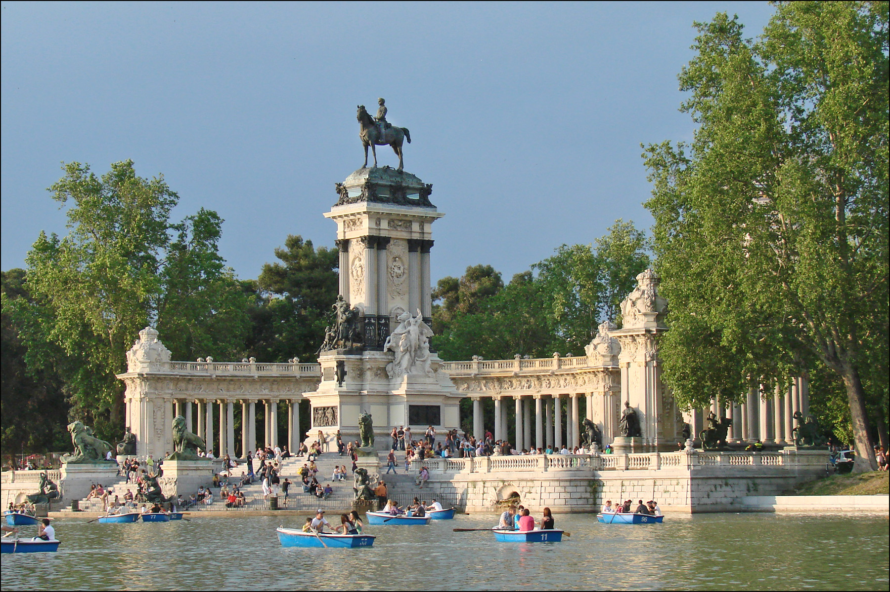
Jardim do Retiro
Parque enorme, sossegado e super bonito, com um lago onde podem andar de barco e a estátua do rei.
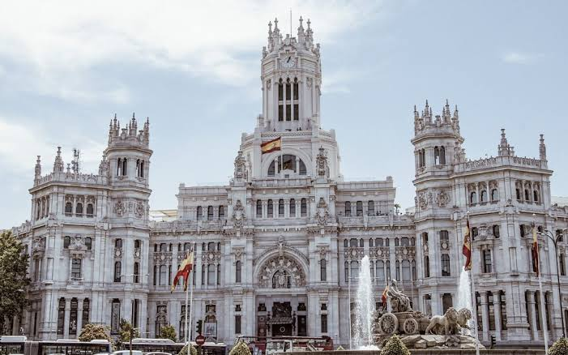
Palácio de Cibeles
Palácio emblemático com um miradouro com vista lindíssima para a cidade.
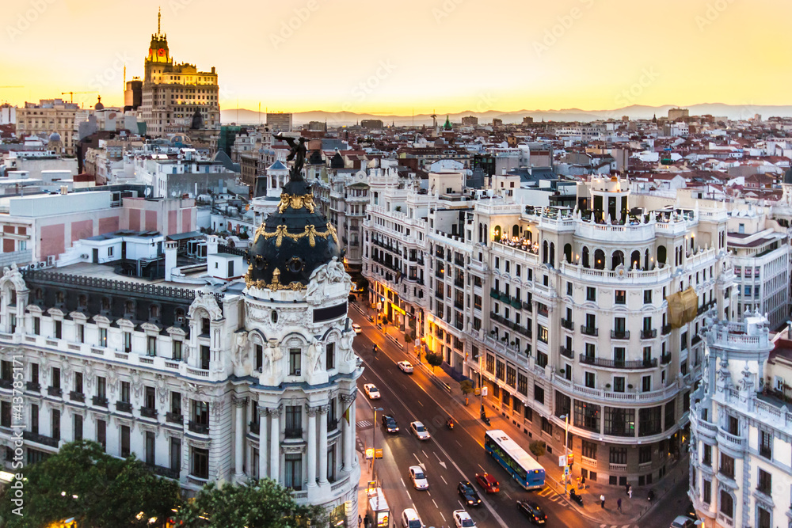
Gran Vía
Rua principal da cidade, é um centro de comércio com lojas, restaurantes e cinemas.
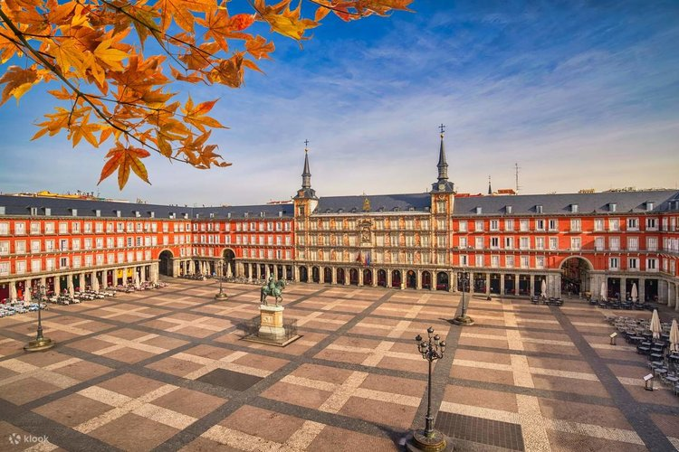
Plaza Mayor
Praça histórica com arquitetura impressionante e vida noturna agitada. Há mercadinhos dependendo da época do ano.
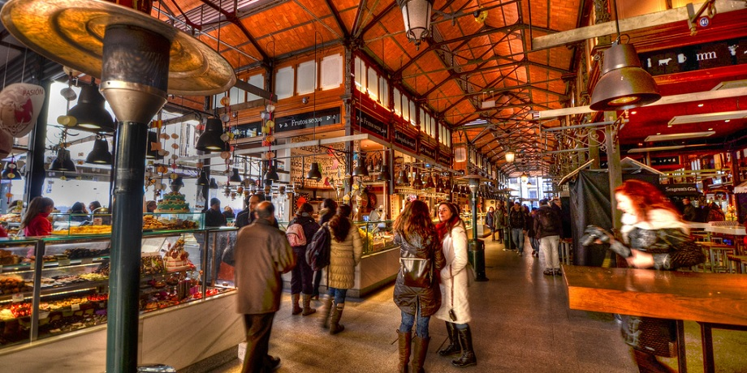
Mercado de São Miguel
O Bolhão de Madrid. É uma visita rápida para verem alguns produtos locais e uma atmosfera única.

Puerta de Alcalá
"Porta de entrada da cidade", mesmo em frente à entrada do Parque do Retiro.
Pequena dica: ao começarem pela Gran Vía e seguirem em direção à Calle de Alcalá, vão encontrar o Palácio de Cibeles. Se continuarem na mesma direção, chegam à Puerta de Alcalá e ao Parque do Retiro. É a melhor maneira de verem grande parte dos monumentos principais num espaço curto de tempo.
🥩 Top Comidas
Os sítios que experimentei, gostei e foram mais do que só me sentar e comer.
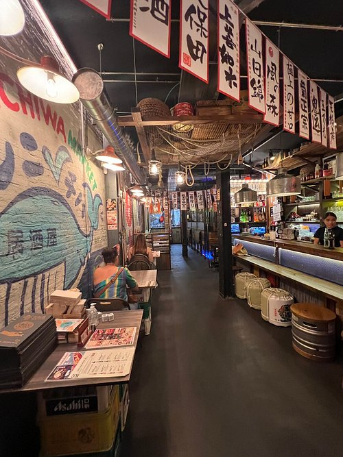
KONNICHIWA
Foi o melhor ramen que já comi na minha vida. Parece mesmo que entras num bar japonês.
Kawaii Cafe
Literalmente um maid café, muito fofinho e pookie, mesmo ao lado da Plaza Mayor.
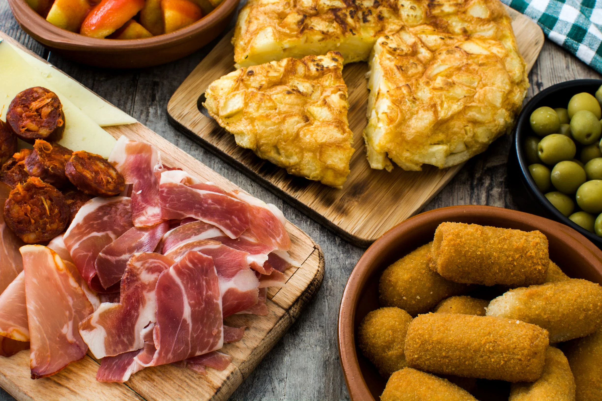
Tapas
Não me lembro de nomes, mas comi na Chueca por não ser tão caro como nas zonas centrais. Sempre maravilhoso, sem falha.
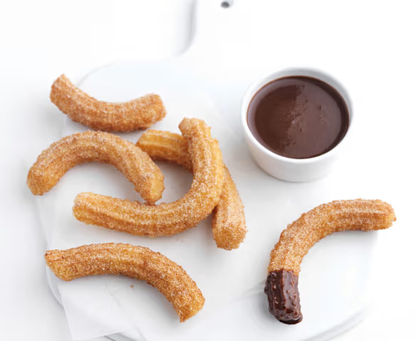
Churros com Chocolate
Literalmente qualquer sítio, são sempre bons. De noite, se saírem depois de jantar, sabem ainda melhor.
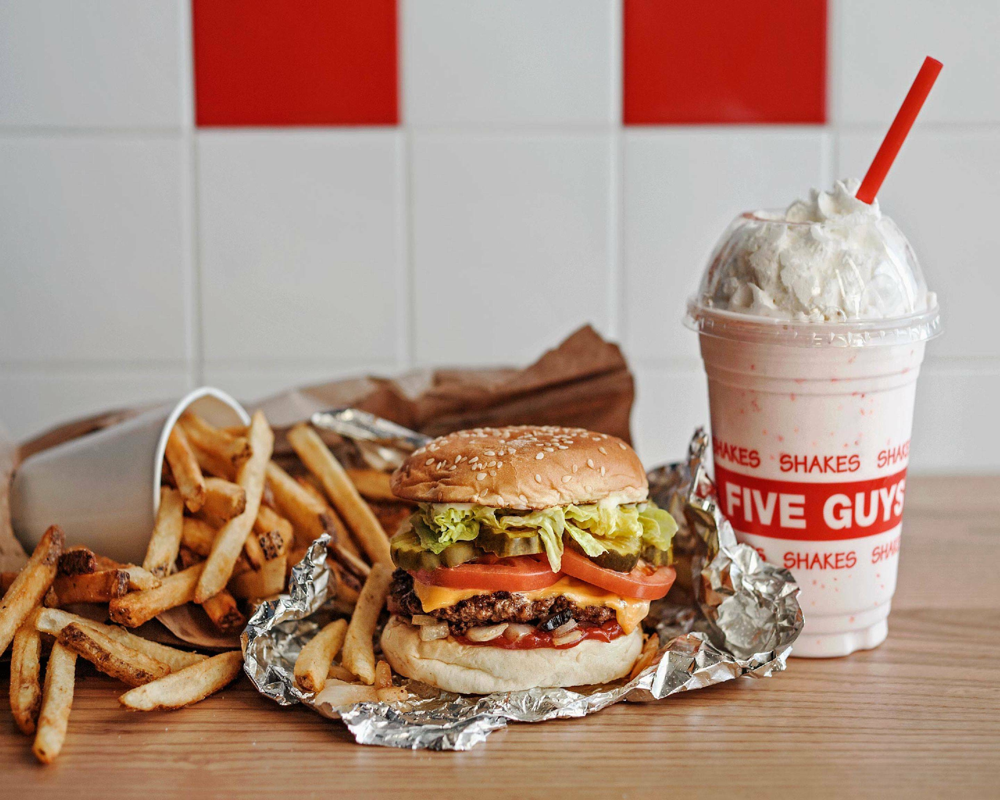
Five Guys
Diferente do nosso fast food, ao lado do vosso hotel. Nada de outro mundo, mas tem molhos e frutos secos grátis. CUIDADO COM AS BATATAS!
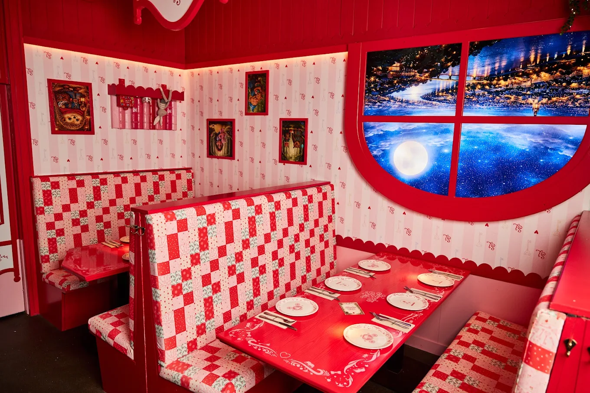
Secretos de Lola Blancanieves
Recomendação da minha mãe, achei pookie e diferente.
🛍️ Top Lojas
Lojas que não temos no Porto. Muitas delas dão ship de graça para Portugal, caso não tenham espaço na mala.
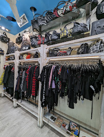
J Canovas Clothing
Roupa alternativa na Chueca, super fácil de chegar lá e com roupas e acessórios muito giros.
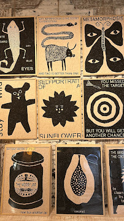
Positive Energy XXI Century
Foi das lojas mais bonitas a que fui lá, com coisas artesanais e artísticas muito variadas. Na Chueca!
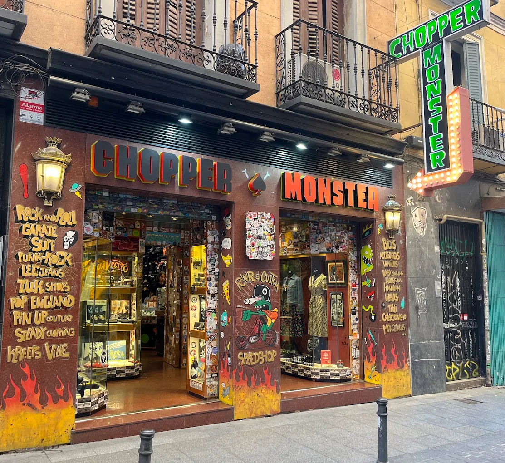
Chopper Monster
Nunca fui, mas parece fixolas. Roupa alternativa.
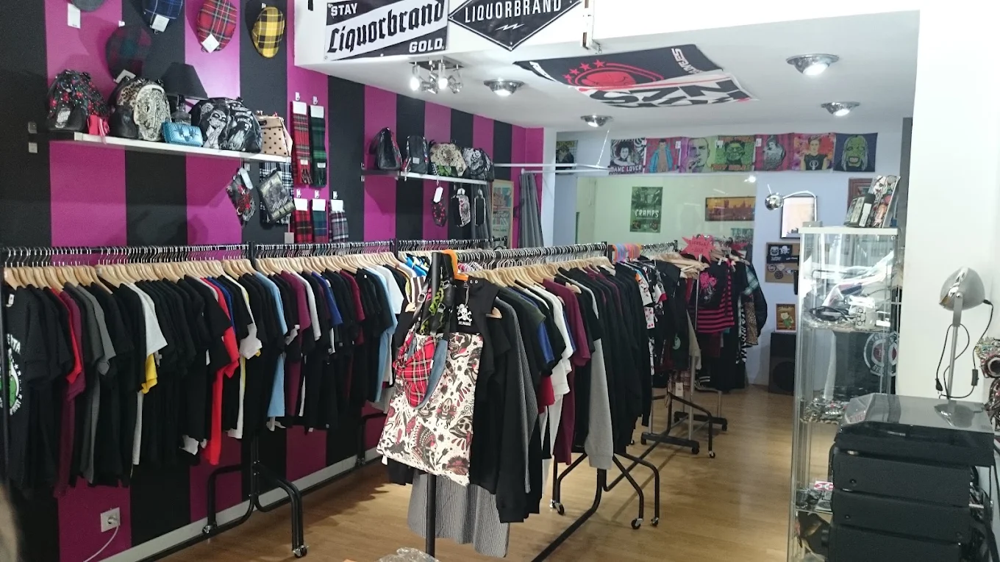
Punk Rocket
Nunca fui, mas parece fixolas. Roupa alternativa.
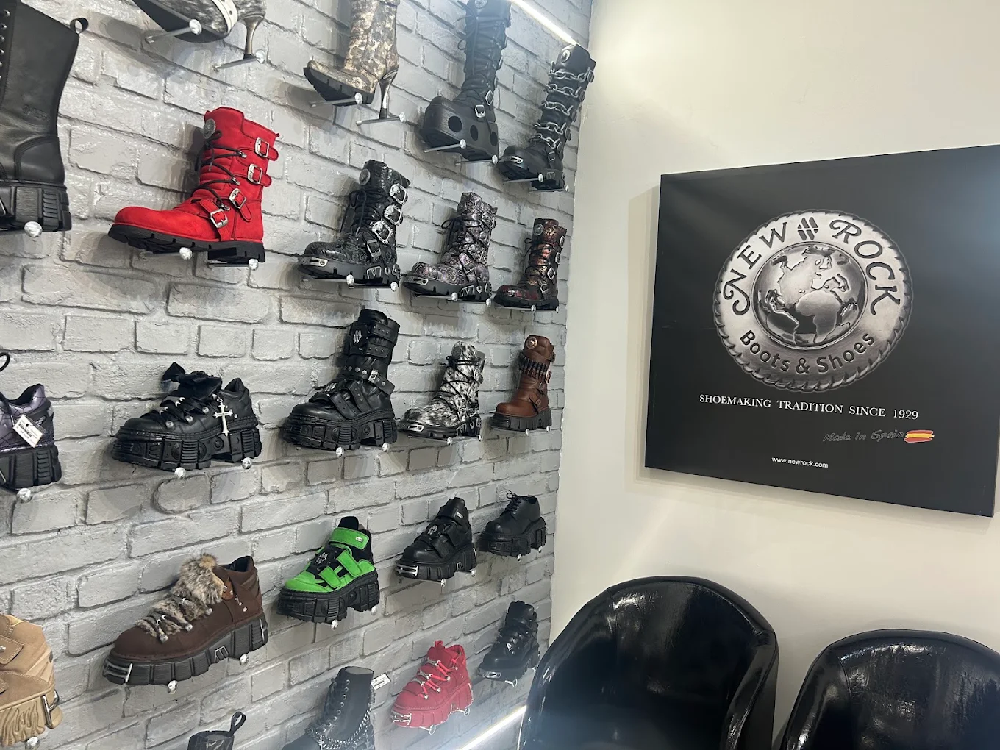
New Rock Madrid
Lojinha de New Rocks.
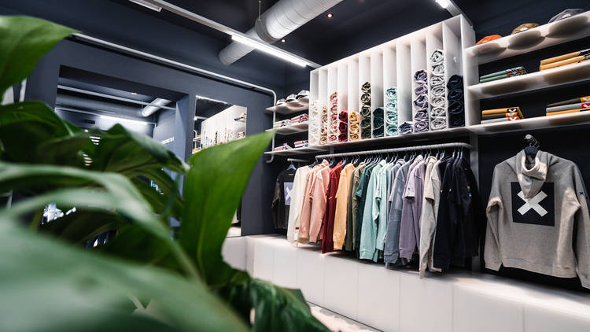
Blue Banana
Pessoalmente, a minha favorita. Concept brand de Madrid com roupas simples e comfy feitas com material reciclado. A minha camisola favorita veio de lá. Na Chueca.

UNIQLO
Marca japonesa super conhecida. A roupa parece ser de super boa qualidade e muito versátil. Na Gran Vía.
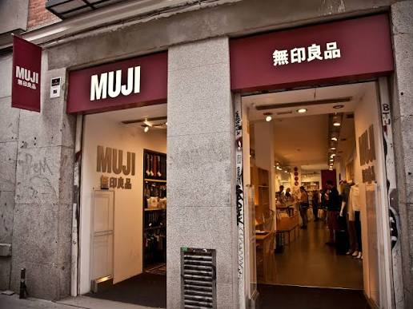
Muji
Loja japonesa também super conhecida: stationery, algumas peças de roupa e coisas úteis para o dia a dia. Adoro a minha caneta de lá.
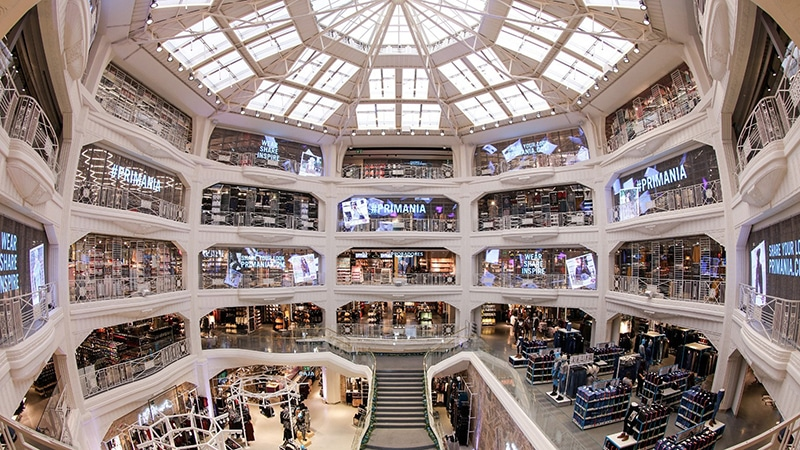
Primark
Opa, a maior Primark da Europa. 5 andares?? Na Gran Vía.
Mapa com Recomendações
A minha mãe preparou uma pasta no Google Maps com alguns locais de que ela gostou em todas as vezes que foi a Madrid. Cusquem e vejam se gostam de algo.
Ver mapa no Google Maps